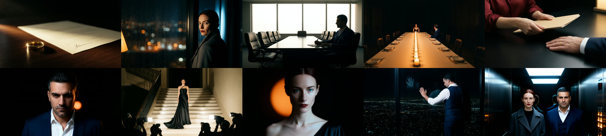
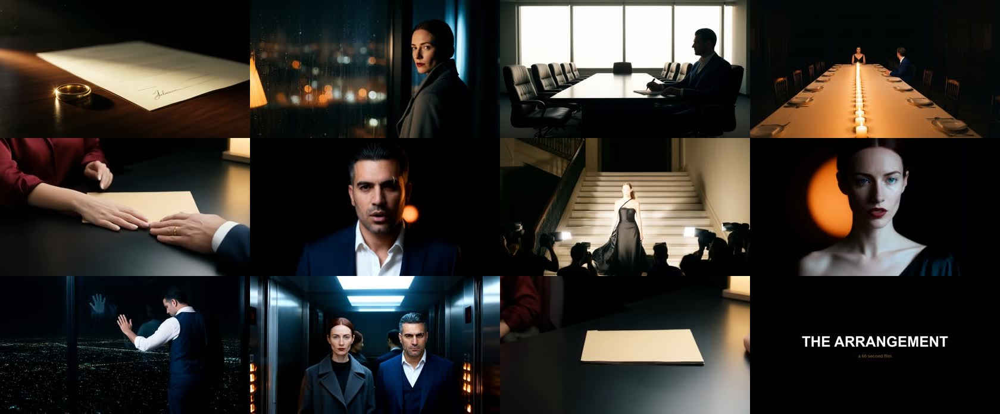

She married the man who took her father's company. He signed knowing exactly why.
A complete 60-second film, generated end to end on your own hardware while you slept. No cloud render, no subscription, no per-clip fee. Ten shots, two characters who stay the same person across every one of them, four spoken lines, a flash montage and a title card, cut to the exact grammar measured off the Korean reference film.
You changed one thing and it unlocked the rest: going local. Every face here comes from a reference image rather than a description, so Elena is carried between shots instead of re-rolled — which is precisely the failure that produced a different man in one of your four Flow headshots.
Voice is Microsoft neural TTS, generated on the machine — since you were asleep, nothing could wait on a person. Elena is en-GB-SoniaNeural at −10 to −14% rate, Adrian is en-GB-RyanNeural at −12%. Two alternate takes are rendered and waiting if you want a different read.
Your GPU ran at 93–95 °C for most of the night, and it throttled. Core clocks fell from 2,835 MHz to as low as 1,612 MHz under sustained load. That is why the measured cost came out at 20.2 GPU-seconds per video-second instead of the 16.2 measured on a cold card — a 25% loss to heat.
Nothing failed and the card protected itself, but this is the number that decides how long a real film takes. I added a cooldown between shots that waits for 72 °C, and it still could not hold the temperature down once the card was hot — it was reaching 95 °C within a single 160-second render.
Worth checking case airflow and fan curve before we run anything longer than an hour. A 10-minute film at this rate is roughly 3.4 hours of GPU time, all of it at the thermal limit.
| Shot | Render | Peak temp | Mean temp | Peak VRAM | Peak power | Clock MHz |
|---|---|---|---|---|---|---|
| S01 | 89 s | 92°C | 82°C | 34.5 GB | 602 W | 180–2835 |
| S02 | 123 s | 94°C | 91°C | 28.9 GB | 601 W | 180–2812 |
| S03 | 73 s | 94°C | 92°C | 28.9 GB | 600 W | 1612–2812 |
| S04 | 137 s | 95°C | 92°C | 28.9 GB | 598 W | 180–2820 |
| S05 | 81 s | 95°C | 92°C | 28.9 GB | 600 W | 1455–2820 |
| S06 | 159 s | 94°C | 92°C | 28.9 GB | 600 W | 277–2812 |
| S07 | 87 s | 94°C | 92°C | 28.9 GB | 599 W | 180–2812 |
| S08 | 161 s | 95°C | 92°C | 28.9 GB | 599 W | 480–2812 |
| S09 | 89 s | 93°C | 92°C | 28.9 GB | 598 W | 1350–2820 |
| S10 | 85 s | 94°C | 91°C | 28.9 GB | 600 W | 180–2812 |
Peak VRAM never exceeded 34.5 GB of 95.6 — the card has enormous headroom on memory. Heat is the constraint, not capacity.

